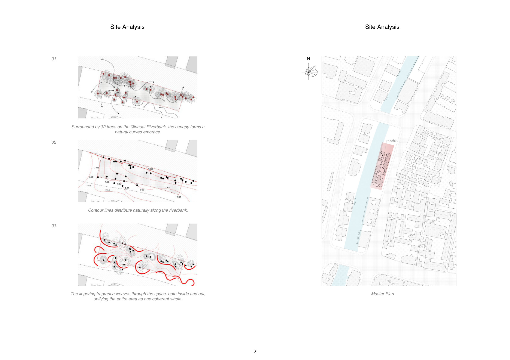
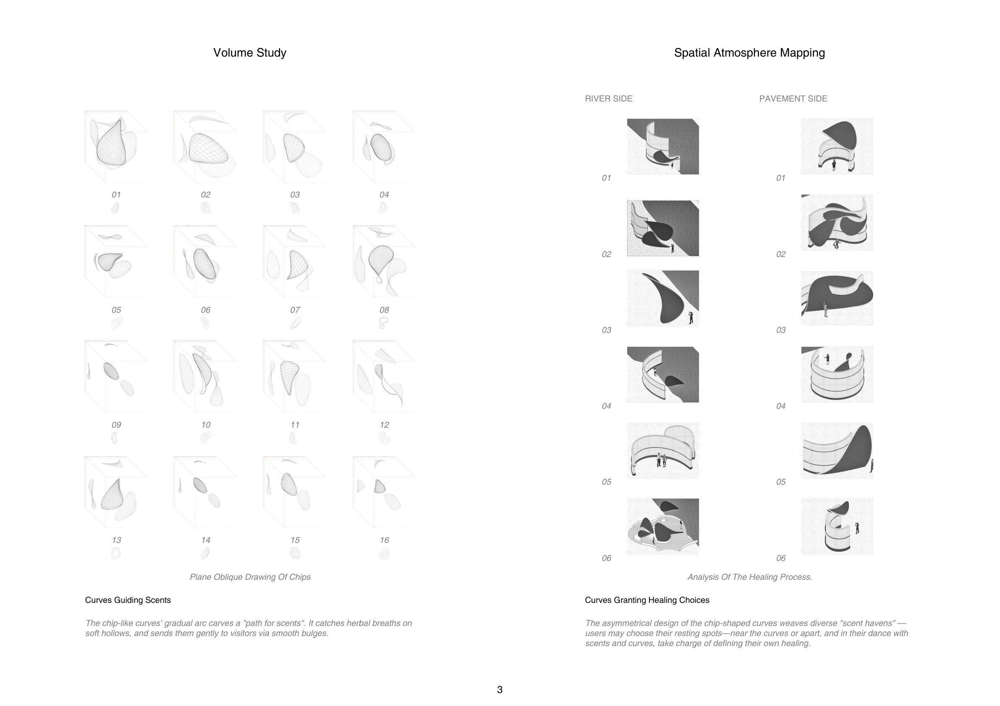
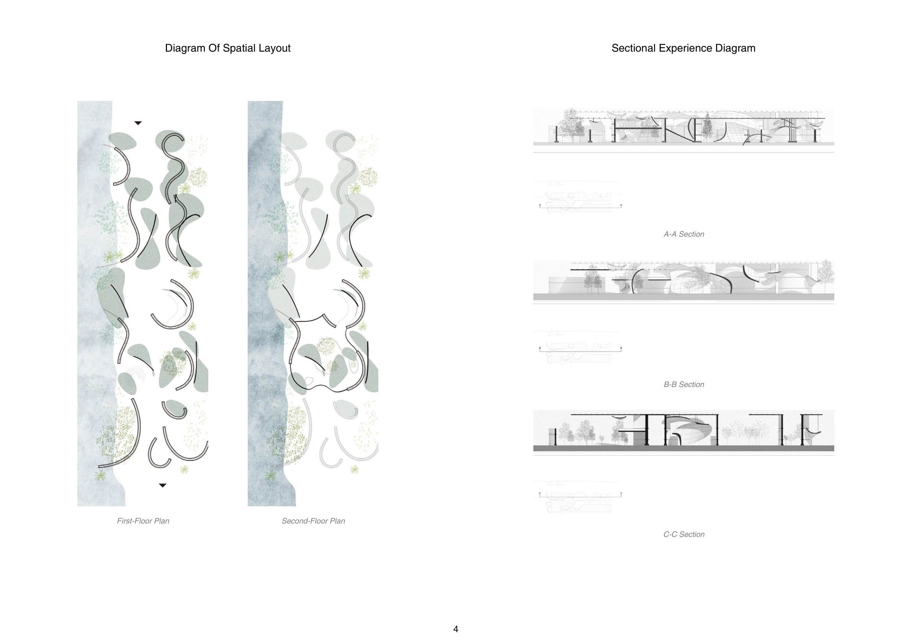
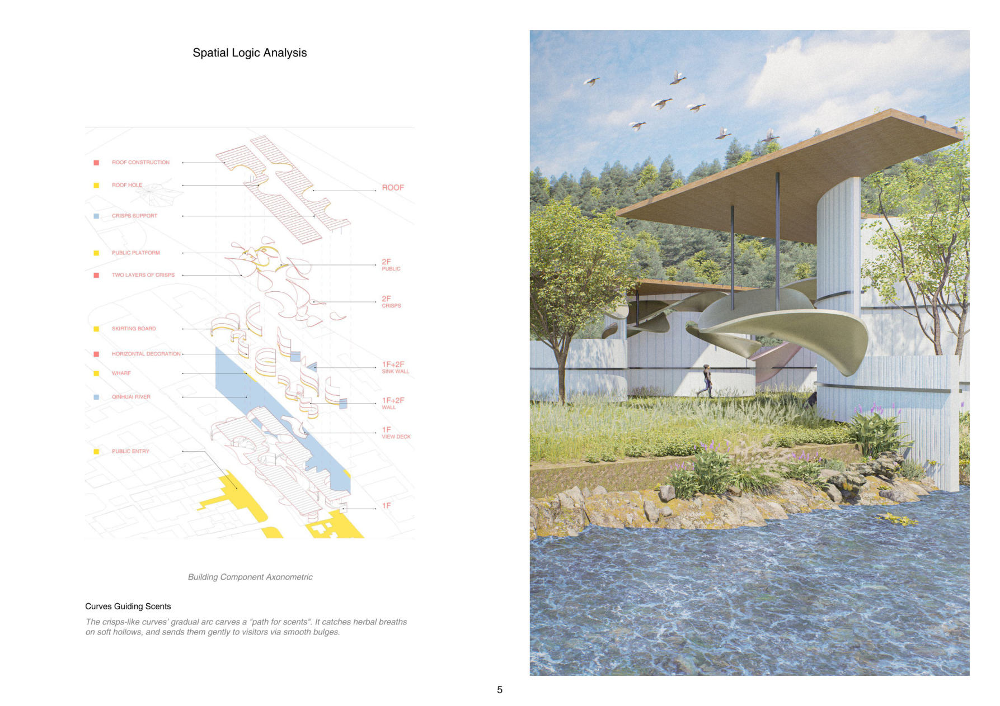

Along Qinhuai's waters, willow-crafted scenes and soft curves float healing peace into the riverside breeze.
When I was a child, Grandma often led me to Duicaoxiang's Qinhuai pier — where camphor shadows danced on the water and calamus scents wove into every summer afternoon. Those moments let me grow up breathing in Nanjing's very essence, and first made me sense architecture's power to cradle memories.
As the riverbank turned rigid and the old pier lost its warmth, this design became my love letter to the Qinhuai: chip-shaped curves modeled on the river's soft bends guide scents and dappled shadows, weaving a healing haven. Concave nooks cradle quiet for introspection; convex forms offer choices for healing — a sensory anchor that turns memory into a space that soothes others.



